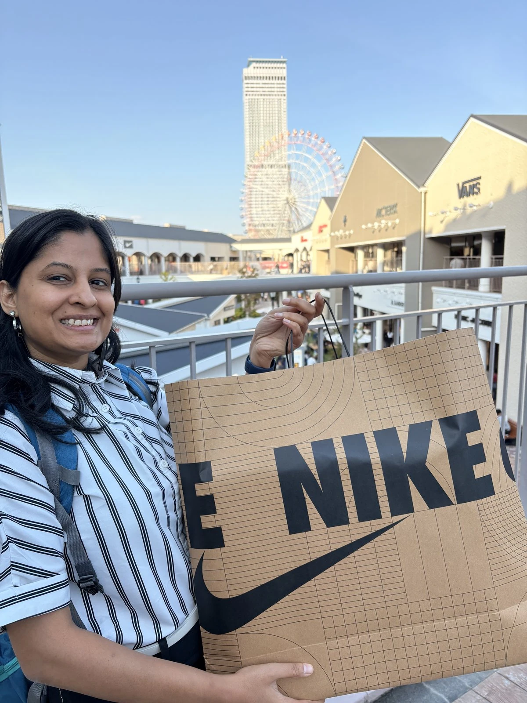
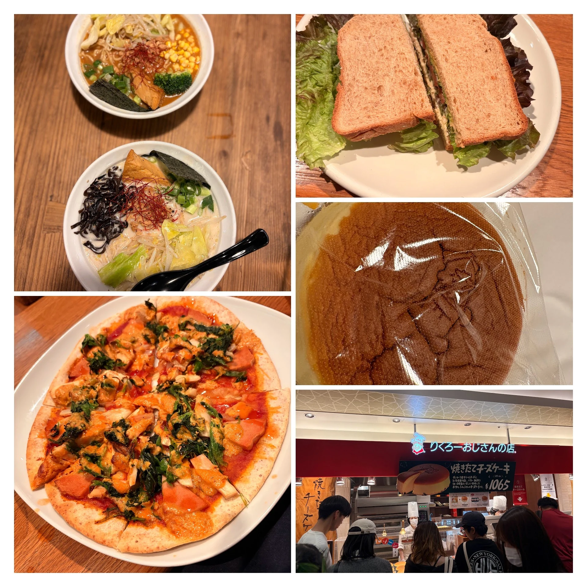
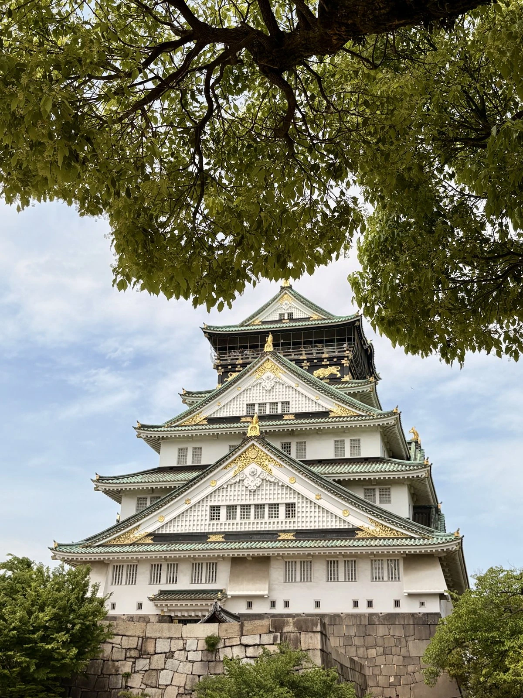
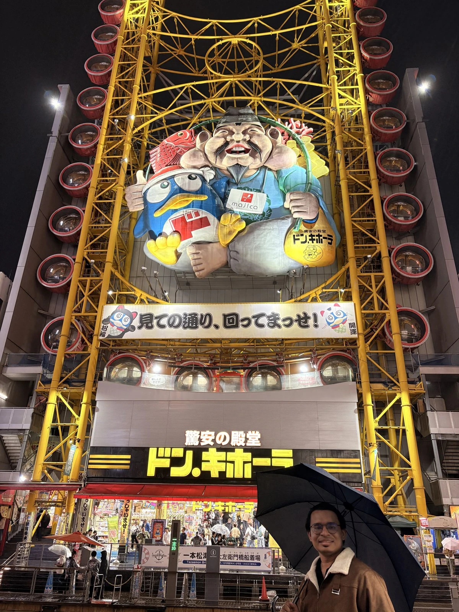
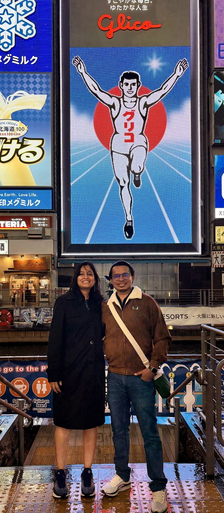
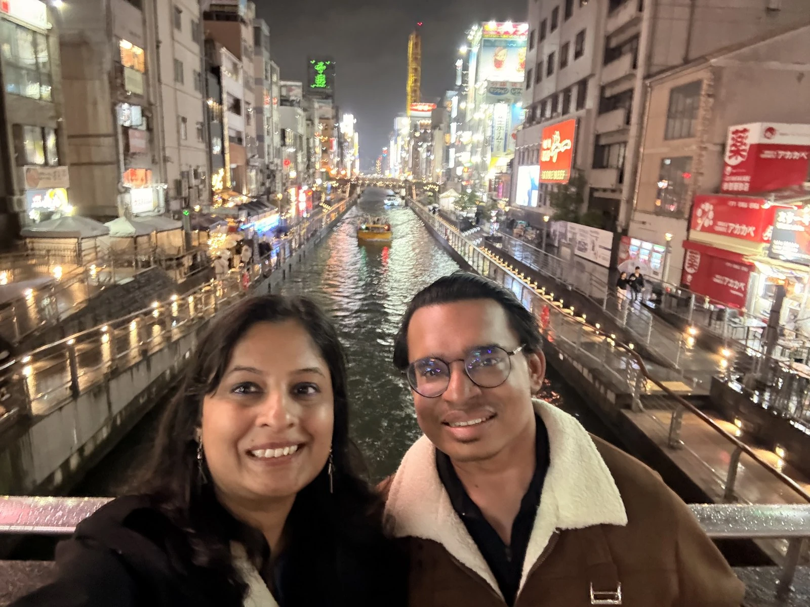

Day 1: 25th April
Rinku Premium Outlet & Rikuro's Cheesecake
The most awaited day. We were in Osaka for two days, but day one was reserved for one thing only — Rinku Premium Outlet. Finally, the long wait for shoe shopping would be over. Osaka is barely 1 hour 15 minutes from Kyoto, so we reached our hotel — Garner Hotel — by 11:30 a.m. Signing up to their loyalty program got us a free early check-in and two complimentary water bottles. We dumped the bags, grabbed a quick brunch nearby, and made it to Rinku by 2:30 p.m.
I'll be honest — writing this on 18 May, I still can't quite believe what happened next. On the 25th of April, I did not imagine in my wildest dreams that we would end up walking out of Japan with six pairs of shoes. But Japan grows on you. With so many options, someone like me only gets more and more confused.
Rinku sits just outside Osaka, near Kansai airport. It's open-air, breezy, and houses 250 shops — every international brand at outlet pricing, then tax-free on top, and since we were there during Golden Week, we were quietly hoping for one more layer of discount. They hand out proper guided maps and have staff to point you in the right direction; seeing it all in one day is practically impossible.
We started with shoes — ASICS, Onitsuka Tiger, Nike, Sketchers. So many options. After trying half the wall at Nike, the numbers started to feel surreal: shoes that retail for ₹10,000+ in India were sitting at ₹4,000–6,000. We bought three pairs from Nike. Nike isn't a tax-free shop, so technically we wouldn't get the extra 10% off — but the upside is you can wear them in Japan straight away. Then at the billing counter I noticed new members get a 10% discount anyway. Signed up on the spot. Very happy.
Next was Sketchers. We didn't end up buying for ourselves, but picked up two pairs for our parents. That's five pairs in a row — never have we shopped like this — so we forced ourselves to stop. ASICS and Onitsuka, honestly, didn't feel worth it compared to what Nike and Sketchers were offering that day.
Then clothes. By 6 p.m., either the deals weren't great or my feet had given up — possibly both. Rinku also has a KitKat store with a unique 14-flavour collection gift pack. I thought it was expensive and walked away. I regret it now. It was absolutely worth taking. Lesson learned: in Japan, if a KitKat gift box catches your eye, just buy it.
Right next to the outlet is a giant Ferris wheel and a beach. We were tired and hungry, so we skipped both and headed back to central Osaka. Then a small mission: get the famous Rikuro's Cheesecake from Daimaru Mall. It closes at 8 p.m. We reached at 7:45 p.m. Made it. Worth the hype — and we picked up one other thing in the same store that was equally good.

Dinner was ramen. Honestly, by the time we sat down, I was so exhausted from carrying shoes and walking that I couldn't enjoy it. Didn't even finish. Took the bus back, ate the cheesecake in bed, and crashed.

Day 2: 26th April
Osaka Castle, Don Quijote & Dotonbori
Somehow I'd convinced myself that Matsumoto Kiyoshi didn't carry KitKats — I hadn't spotted any in Kyoto — and obviously I wanted the full Don Quijote experience anyway. After some research I figured out that the Don Quijote branches in Osaka offer the best rates for bulk buying. So if you've been following from day one, you can guess exactly which direction day two was pointed in. 😄
We started at Osaka Castle. It's genuinely impressive — gold detailing catching the sun, stone walls and moats holding centuries of history. We clicked far too many pictures. Since it was a Sunday, families had spread out picnic setups across the gardens outside. It felt so good to watch. We didn't grow up in that culture, and we've only seen it in movies — seeing the picnic culture live made me realise how much we miss going out into nature on holidays back home, partly because Pune doesn't really have spaces like that.
After the castle, we headed for lunch — but the spot we'd picked near Donki was closed because of Sunday. We found a Nepalese restaurant nearby and ate Indian roti and sabzi. Reset complete.

And then, finally — the other most-awaited stop. Don Quijote. It has everything. Literally everything. Every snack, every chocolate, every skincare item we'd been buying piecemeal across Japan — all under one roof. Just slightly pricier on individual items. The bits I was happiest about were the skincare from OS Drug Store and Matsumoto Kiyoshi, then chocolates, candies, gums, matcha lattes, and more KitKats than I'd like to admit. We spent 3.5 hours in there, and I'm convinced no amount of time is enough — it just depends on how long you can keep going.
By the end the bag was too heavy to drag anywhere else, so we went back to the hotel to drop it. And of course, that's when it started raining.

We still wanted to see Dotonbori, but I knew the veg options there would be limited. Harshit found Mercy Vegan Cafe — a small spot near Dotonbori run by a lady and her daughter. Vegan, cosy, warm. The food was great. The desserts and baked cookies were great too. If you're strictly vegetarian, I'd recommend eating something proper before heading into Dotonbori itself.
From there, we walked to Dotonbori. The vibe is unparalleled, even in the rain. We did the obligatory tourist photos in front of Don Quijote and the Glico running man, and wandered both sides of the canal.


Then came the shock. I spotted KitKats at a Matsumoto Kiyoshi on Dotonbori for 220 yen per packet — I had paid 400 yen for the same packet earlier. Worse: in that one lane there were five Matsumoto Kiyoshi stores and every single one had a different price for the same KitKat, ranging from 220 to 350 yen. It's a tough game. But like Harshit reminded me — it is what it is. We stayed until our feet gave up — usually it's the shop closing time that wins, this time it was the feet.
Tokyo is order. Kyoto is calm. Osaka is the friend who pulls you into the night with shopping bags and street food, and laughs the loudest. You don't visit Osaka — you hang out with it.
A quick warning about Garner Hotel
Garner has five hotels inside a 3 km radius in central Osaka. Put the exact location into Maps when you head back, otherwise you'll walk to the wrong one, realise mid-lobby, and have to walk back to the right one. Ask me how I know.
Packing for the Shinkansen
Tomorrow's a big day — bullet train + Hiroshima. Time to pack. After all this shopping, the black suitcase had to come out from inside the red one. Final count: one large, one medium, one small suitcase, and one fully-packed backpack. We've pre-booked the extra-space seats on the Shinkansen specifically to handle this much luggage. Early morning train. Sleep got delayed because of the packing, but that's fine.
Where It All Happened
Two days, one city, a lot of walking. Pan the map, click a pin — each one is a moment above.
Must-Do in Osaka
- Rinku Premium Outlet: 250 shops, best shoe shopping in Japan. Plan a full day.
- Osaka Castle Grounds: Walk the gardens, especially on a Sunday for picnic vibes.
- Rikuro's Cheesecake (Daimaru): Reach before 8 p.m. closing — worth the rush.
- Don Quijote (Osaka branch): Best bulk pricing in Japan. Block out 3+ hours.
- Dotonbori at Night: Glico man, Don Quijote ferris wheel, canal reflections.
- Mercy Vegan Cafe: Plant-based, cosy, near Dotonbori — perfect veg backup.
- KitKat 14-Flavour Gift Pack: Buy it. We didn't. Don't be us.
- Check Matsumoto Kiyoshi prices in 2-3 stores before bulk buying — same product, very different prices.
Join the conversation
Have a question, a tip, or a memory from the same place? Drop a comment below — no signup needed.